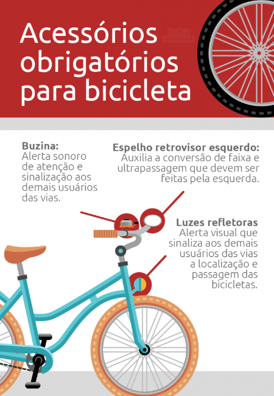

Na hora de transformar as pedaladas, deixando-as mais seguras e confortáveis, os acessórios para bike são fundamentais.
Eles ajudam a trazer mais segurança ao ciclista, ao mesmo tempo em que lhe prepara para enfrentar possíveis situações adversas.
Capacete
O capacete é um dos acessórios para bike mais importantes. Afinal, é ele que oferecerá a segurança necessária para pedalar em diferentes terrenos.
Então, toda vez que for andar de bicicleta, não se esqueça de usar o capacete.
Luvas de Ciclismo
Ainda entre os acessórios de bike obrigatórios, não se esqueça de comprar um bom par de luvas de ciclismo. Além de protegerem contra as quedas,
elas ajudam a otimizar a performance, porque melhoram a aderência das mãos e a sensibilidade no aperto das manetes de freio e alavancas de câmbio.
Òculos
Ao pedalar é natural que seus olhos sofram com poeiras, sol e insetos. Para proteger sua visão, os óculos de ciclismo são essenciais.
É importante que o modelo escolhido tenha proteção ultravioleta, ventilação adequada para evitar que os óculos embacem ou que o vento resseque
os olhos do ciclista e seja confortável (por isso, alguns modelos contam com partes ajustáveis e emborrachadas).
Caramanhola
Manter a hidratação é extremamente importante, por isso a caramanhola é sempre citada como um dos acessórios para bike indispensáveis. O ideal é
que haja um suporte no quadro da bicicleta para poder colocar a sua caramanhola e não deixá-la em uma mochila nas costas, porque ela poderá
esquentar.
Kit de ferramentas e bomba de ar
Nenhum ciclista está imune aos desafios do percurso, como pneus furados e problemas com a bike. Por isso, é sempre bom estar prevenido. Um kit básico de ferramentas poderá lhe ajudar bastante, assim como remendo para pneus e uma boa bomba de ar.